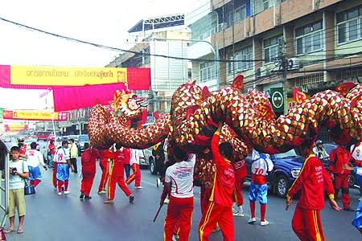

จีนราชบุรี

ชาวไทยเชื้อสายจีนในจังหวัดราชบุรี เป็นกลุ่มชาติพันธุ์ที่มีบทบาทอย่างสูงยิ่งในการขับเคลื่อนเศรษฐกิจและการค้ามาอย่างยาวนาน โดยประวัติศาสตร์การอพยพย้ายถิ่นฐานระลอกใหญ่ของชาวจีนโพ้นทะเลเข้ามายังเมืองราชบุรี เกิดขึ้นอย่างหนาแน่นในช่วงรัชสมัยรัชกาลที่ 3 ถึงรัชกาลที่ 5 ซึ่งสามารถแบ่งออกเป็น 5 กลุ่มย่อยตามสำเนียงภาษา ได้แก่ จีนแต้จิ๋ว จีนแคะ (ฮากกา) จีนไหหลำ จีนกวางตุ้ง และจีนฮกเกี้ยน โดยกลุ่มที่เข้ามาตั้งรกรากเป็นประชากรส่วนใหญ่คือกลุ่มจีนแต้จิ๋ว ปัจจัยสำคัญที่ดึงดูดชาวจีนให้เข้ามาในพื้นที่คือโอกาสในการประกอบอาชีพ โดยเฉพาะเมื่อมีการขุดคลองดำเนินสะดวกในสมัยรัชกาลที่ 4 และการสร้างทางรถไฟสายใต้ในเวลาต่อมา ส่งผลให้มีแรงงานและพ่อค้าชาวจีนเข้ามาปักหลักฐานทัพทางธุรกิจตามริมแม่น้ำลำคลอง ก่อนจะขยายตัวและสร้างความเจริญรุ่งเรืองจนกลายเป็นย่านการค้าและตลาดสำคัญในปัจจุบัน เช่น ในเขตอำเภอเมืองราชบุรี อำเภอบ้านโป่ง อำเภอโพธาราม และอำเภอดำเนินสะดวก